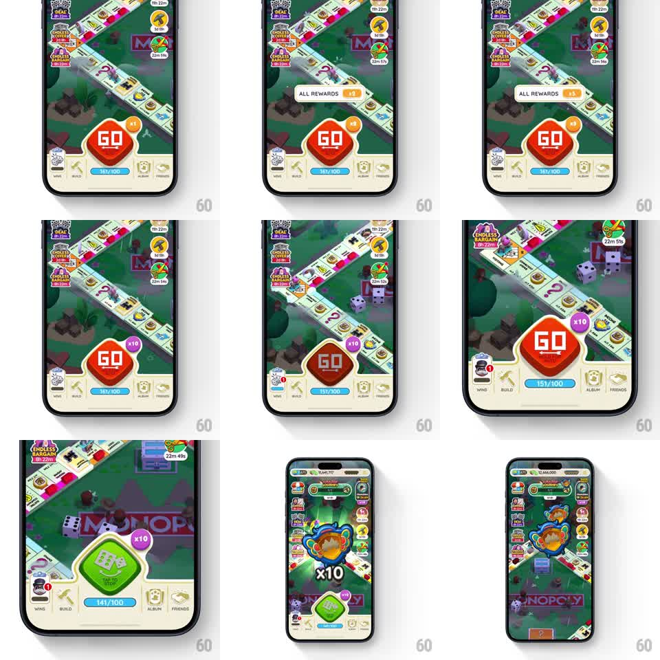

Media
Frame-by-frame

Rebuild this interaction 1:1: Monopoly Go's board controls - tapping through the dice multiplier, long-pressing GO to arm auto-roll with the green auto button, and a shield collect that swoops into its slot.

Rebuild this interaction 1:1: Monopoly Go's board controls - tapping through the dice multiplier, long-pressing GO to arm auto-roll with the green auto button, and a shield collect that swoops into its slot.
## Integration
Integration: stack-agnostic spec - springs given as stiffness/damping, timed motions as duration + curve; map every value to your framework and animation library of choice.
## Scene
The Monopoly Go board: the big red "GO" roll button bottom-center with a purple "x10" multiplier badge at its top-right, the dice counter ("161/100") below, event banners stacked at the left edge, and a "ALL REWARDS" pill above the button. Long-press state: the GO button swaps to a green auto-roll button ("TAP TO STOP" style). Shield state: a shield token collects from the board into its HUD slot.
## Motion spec
Pattern: multiplier cycle, long-press auto-roll, shield swoop.
- Tap the multiplier badge: it pops (scale 1.0 to 1.2 to 1.0, 200ms) and the value cycles (x2, x3, x5, x10...) with a quick vertical tick (old value slides up, new slides in, 150ms).
- Long-press GO (~400ms): the button depresses, a radial fill sweeps around it, then it flips to the green auto-roll state (color wipe red to green, 250ms) and dice begin rolling on their own cadence (~1 roll/s) across the board.
- Tap again to stop: the button flips back to red GO with the same wipe.
- Shield collect: when the token lands on a shield tile, a shield icon bursts from the tile (scale 0.5 to 1.2, 250ms), then swoops along an arc into the shield HUD slot at the left (500ms, ease-in), the slot flashing and its count ticking up on arrival.
## Calibration
- The long-press fill is the affordance: without the radial sweep the gesture feels like a laggy tap.
- Auto-roll cadence is steady and slightly slower than manual tapping - the player should feel they can stop it.
## Reduced motion
Multiplier ticks without pop; shield fades into its slot.
## Don't miss
- The multiplier badge rides on the GO button's corner and scales with it when the button state changes.
- The shield's arc path targets the actual slot position, not a generic corner.